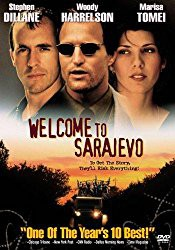

#8883 War of Sarajevo
Alternativ: Welcome to Sarajevo
 
 IMDB-Wertung: 6.8 / 10
IMDB-Wertung: 6.8 / 10  Metascore: 0
Metascore: 0 
Journalist Floyd from US, Michael Henderson from UK and their teams meet the beginning of Bosnian war in Sarajevo. During their reports they find an orphanage run by devoted Mrs. Savic near the front line. Henderson gets so involved in kids' problems that he decides to take on the children, Emira, illegally back to England. He is assisted by American aid worker Nina.
Jahr: 1997
Dauer: 102 Minuten
FSK: 12
Land: England Studio: Edel Media & EntertainmentTonspuren: DTS - ,
Untertitel:
Auflösung: 1080p (1920x816) Größe: 8949 MB
Genre: Drama, Krieg
Regisseur: Michael Winterbottom
Drehbuch: Michael Nicholson
Soundtrack: Adrian Johnston
Darsteller:
 Stephen Dillane als
Stephen Dillane als  Woody Harrelson als
Woody Harrelson als  Marisa Tomei als
Marisa Tomei als  Kerry Fox als
Kerry Fox als  Goran Visnjic als
Goran Visnjic als  James Nesbitt als
James Nesbitt als - Emily Lloyd als
 Juliet Aubrey als
Juliet Aubrey als - Labina Mitevska als
 Kerry Shale als
Kerry Shale als - Frank Dillane als
- Emira Nusevic als
- Igor Dzambazov als
- Gordana Gadzic als
- Drazen Sivak als
- Vesna Orel als
- Davor Janjic als
- Vladimir Jokanovic als
- Izudina Brutus als
- Sanja Buric als
- Haris Secic als
- Majda Tusar als
- Miralem Zupcevic als
- Peter Kelly als
- Dijana Bolanca als
- Nino Levi als
- Berina Salijevic als
- Paige Brogan-Smith als
- Petre Arsovski als
- Viktorija Peceva als
- Nikolina Kujaca als
- Joana Popovska als
- Natali Rajcinovska als
- Brankica Jankoska als
- Dragan Marinkovic als
- Senad Basic als
- Ines Hadzovic als
- Cesar Adi als
- Milan Plestina als
- Ines Fancovic als
- Haris Sarvan als
- Pejdah Dzevad als
- Vlado Jokanovic als
- Viktorija Cherepnalkovska als
- Alex Nikolic als
Datei: X:\1997\War of Sarajevo (1997, FSK12, 1920x816).mkv seit 04.05.2018
Festplatte: HD 1996-2002
 Es gibt insgesamt 83 Filme in der Gruppe '1997'
Es gibt insgesamt 83 Filme in der Gruppe '1997'